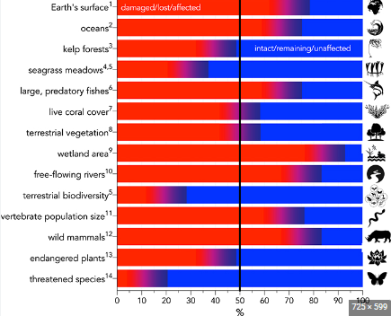

About Ecosystem
The interaction and interrelationship between the living community (plants, animals, and organisms) in relation to each other and the non-living community (soil, air, and water) is referred to as an ecosystem. Thus, an ecosystem is a structural and functional unit of biosphere. It is made up of living and non-living beings and their physical environment. In other words, a natural ecosystem is defined as a network of interactions among the organisms and between organisms and their environment. Nutrient cycles and energy flows keep these living and non-living components connected in an ecosystem.
Tips to Protect Ecosystem
The first step to preserving ecosystems is to remember that you are part of them. Preserving ecosystems starts at home. Everything you use in your daily life impacts the environment, from the cellphone you use to the food you eat and the clothes you wear.
- Conservation Practices to Save the Ecosystem
There are no strict lines on where an ecosystem starts and ends. Classic examples of ecosystems include oceanic kelp forests, coral reefs, mangroves, the Amazon rainforest and the Arctic tundra. However, ecosystems are everywhere, from your gut microbiome, backyard and local park to the entire planet. To start preserving the ecosystem, take a moment to think about how you interact with your environment. - Save Water
Water is a vital commodity in every ecosystem. Did you know that leaving the tap running while brushing your teeth uses around five gallons of water? You can save water every day by doing things like turning off the tap while you brush your teeth, fixing leaky faucets, taking shorter showers and watering plants with the cooled water used to boil vegetables rather than pouring it down the drain. - Conserve Energy
Unless you're planning to live completely off grid, you're going to need to use electricity. Creating simple habits like turning off lights and appliances when they're not being used will add up. In winter, reduce your need for heaters by adding an extra blanket to your bed at night and closing doors to rooms not being used. When buying appliances, opt for energy-saving models. - Make Smart Food Choices
Buy local, in-season produce and organic where possible. Farmers' markets are a great place to shop locally. You could also grow your own vegetable garden. This not only reduces your carbon footprint by minimizing the distance your food travels but is healthier as fruits and vegetables lose nutrients the longer they are in storage. - Start Composting
Composting organic matter reduces landfill waste and creates healthy soil to feed your garden. You can use many easy compositing systems at home, including bokashi bins, worm farms and composting tumblers. Look for a local curbside or drop-off composting program if you don't have a green thumb or a garden. - Try Eco-friendly Products
Shop for products that don't use harmful chemicals either during their manufacture or in the actual product themselves. Eco-friendly personal hygiene products and cosmetics have the added benefit of being better for your health as skin is the largest organ in the human body and highly absorbent. Additionally, help reduce landfill waste and excess rubbish by selecting reusable items rather than disposable.
Effects of Ecosystem Destruction
When we’ve mined what we can from our planet, when all animals have died, when there are no more fish in the sea, when the Earth is barren and devoid of trees… what will happen to us? everything relies on everything else around it. Our planet is alive and interconnected and we are part of that web.
Ecosystem destruction can have serious consequences for both the environment and humans. Some effects include:
- Increased flooding due to the erosion of soil and lack of trees
- Rising of the sea levels due to the melting of the glaciers, caused by Global Warming
- Disruption of the food chain when the apex predators become extinct
- Water shortage - we only have a finite supply of fresh drinking water
- Food shortage as the lands become barren and the oceans become fishless
- Loss of biodiversity as whole species of living things disappear due to deforestation
- Pollution will eventually become unmanageable and affect our health.
- Rising temperatures may be too much for all living things on the planet
Ecosystem Depletion Rate
The depletion rate of ecosystems refers to the speed at which natural resources are being used up or destroyed. This rate is often influenced by human activities such as deforestation, overfishing, and pollution. It is important to monitor and reduce this rate to prevent irreversible damage to ecosystems.
- Three-quarters of the land-based environment and about 66% of the marine environment have been significantly altered by human actions. On average these trends have been less severe or avoided in areas held or managed by Indigenous Peoples and Local Communities.
- More than a third of the world’s land surface and nearly 75% of freshwater resources are now devoted to crop or livestock production.
- The value of agricultural crop production has increased by about 300% since 1970, raw timber harvest has risen by 45% and approximately 60 billion tons of renewable and nonrenewable resources are now extracted globally every year – having nearly doubled since 1980.
- Land degradation has reduced the productivity of 23% of the global land surface, up to US$577 billion in annual global crops are at risk from pollinator loss and 100-300 million people are at increased risk of floods and hurricanes because of loss of coastal habitats and protection.
- In 2015, 33% of marine fish stocks were being harvested at unsustainable levels; 60% were maximally sustainably fished, with just 7% harvested at levels lower than what can be sustainably fished.
- Urban areas have more than doubled since 1992.
- Plastic pollution has increased tenfold since 1980, 300-400 million tons of heavy metals, solvents, toxic sludge and other wastes from industrial facilities are dumped annually into the world’s waters, and fertilizers entering coastal ecosystems have produced more than 400 ocean ‘dead zones’, totalling more than 245,000 km2 (591-595) – a combined area greater than that of the United Kingdom.
- Negative trends in nature will continue to 2050 and beyond in all of the policy scenarios explored in the Report, except those that include transformative change – due to the projected impacts of increasing land-use change, exploitation of organisms and climate change, although with significant differences between regions.
the source of above statistics are from un.org reports
Types of Ecosystems
There are many types of ecosystems, each with its unique characteristics and species. Some examples include:
- Forest ecosystems
- Grassland ecosystems
- Mountain ecosystems
- Desert ecosystems
- River ecosystems
- Ocean ecosystems
- Pond ecosystems